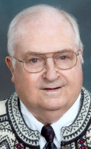

Donald Kenneth Sandness
M, #90754, f. 25 juli 1927, d. 3 oktober 2013
Foreldre
Familie: Marcella M. Reiff (f. 19 august 1925, d. 22 oktober 2002)
| Datter | Jo Ann Sandness (f. etter 1949) |
| Datter | Donna Sandness (f. etter 1950) |

Donald Kenneth Sandness
Biografi
Donald Kenneth Sandness ble født den 25 juli 1927 Canton, Lincoln County, South Dakota, USA. Han giftet seg med
Marcella M. Reiff den 30 januar 1949 Dell Rapids Methodist Church, South Dakota, USA. Han døde den 3 oktober 2013 Sanford Canton-Inwood Hospital, Canton, Lincoln County, South Dakota, USA. Han ble gravlagt Canton Lutheran Cemtery, Canton, Lincoln County, South Dakota, USA.
He was a member of Canton Lutheran Church, but also enjoyed fellowship at Springdale and Grand Valley Lutheran Churches. Donald was always very proud of his Norwegian heritage and enjoyed his many trips to Norway, as well as hosting many Norwegian visitors. He especially enjoyed his years singing with the Greig Male Chorus and many activities with the Sons of Norway. Donald was a wonderful "old time" dancer and met his bride at the Arkota Ballroom. In his later years, watching the Lawrence Welk Show and any other polka show was his favorite pastime.
| Sist redigert |
23 juni 2026 21:32:51 |
| Slektskap | 4-menning 2 ganger forskjøvet til Håkon Wahl |
Marcella M. Reiff
K, #90755, f. 19 august 1925, d. 22 oktober 2002
| Datter | Jo Ann Sandness (f. etter 1949) |
| Datter | Donna Sandness (f. etter 1950) |
Biografi
Marcella M. Reiff ble født den 19 august 1925. Hun giftet seg med
Donald Kenneth Sandness sønn av
Ola August Sandnes og
Jenny Kristine Halvorsdatter, den 30 januar 1949 Dell Rapids Methodist Church, South Dakota, USA. Marcella M. Reiff døde den 22 oktober 2002 USA. Hun ble gravlagt Canton Lutheran Cemtery, Canton, Lincoln County, South Dakota, USA.
Marcella M. Reiff was also known as Marcella M. Reiff Sandness.
| Sist redigert |
23 juni 2026 21:32:51 |
Helen Olive Sandness
K, #90756, f. 1916, d. oktober 1971
Foreldre
Biografi
Helen Olive Sandness ble født i 1916 Lincoln County, South Dakota, USA. Hun giftet seg med
Herold Mervin Danielson den 2 august 1941 Lincoln County, South Dakota, USA. Hun døde i oktober 1971 Lincoln County, South Dakota, USA. Hun ble gravlagt Grand Valley Lutheran Cemetery, Canton, Lincoln County, South Dakota, USA.
Helen Olive Sandness was also known as Helen Olive Danielson.
| Sist redigert |
23 juni 2026 21:45:55 |
| Slektskap | 4-menning 2 ganger forskjøvet til Håkon Wahl |
Herold Mervin Danielson
M, #90757, f. 23 februar 1911, d. 6 oktober 1990
Biografi
Herold Mervin Danielson ble født den 23 februar 1911. Han giftet seg med
Helen Olive Sandness datter av
Ola August Sandnes og
Jenny Kristine Halvorsdatter, den 2 august 1941 Lincoln County, South Dakota, USA. Herold Mervin Danielson døde den 6 oktober 1990 Lincoln County, South Dakota, USA. Han ble gravlagt Grand Valley Lutheran Cemetery, Canton, Lincoln County, South Dakota, USA.
| Sist redigert |
23 juni 2026 21:45:55 |
John Omar Sandness
M, #90758, f. 1918, d. 1930
Foreldre
Biografi
John Omar Sandness ble født i 1918 Canton, Lincoln County, South Dakota, USA. Han døde i 1930 Canton, Lincoln County, South Dakota, USA. Han ble gravlagt Grand Valley Lutheran Cemetery, Canton, Lincoln County, South Dakota, USA.
| Sist redigert |
23 juni 2026 21:32:51 |
| Slektskap | 4-menning 2 ganger forskjøvet til Håkon Wahl |
John Omar Sandness
M, #90759, f. 24 desember 1930, d. 9 september 1998
Foreldre
Biografi
John Omar Sandness ble født den 24 desember 1930 Canton, Lincoln County, South Dakota, USA. Han døde den 9 september 1998 Canton, Lincoln County, South Dakota, USA. Han ble gravlagt Canton Lutheran Cemtery, Canton, Lincoln County, South Dakota, USA.
| Sist redigert |
23 juni 2026 21:32:51 |
| Slektskap | 4-menning 2 ganger forskjøvet til Håkon Wahl |
Fredrik Mathias Taraldsen Mediå
M, #90763, f. 25 mai 1834, d. 8 november 1913
Foreldre
Biografi
Fredrik Mathias Taraldsen Mediå ble født den 25 mai 1834 Vie, Grong, Nord-Trøndelag. Han giftet seg med
Olea Andreasdatter den 31 mars 1861 Grong kirke, Grong, Nord-Trøndelag. Han døde den 8 november 1913 Grong, Nord-Trøndelag.
| Sist redigert |
2 juli 2020 00:00:00 |
Olea Andreasdatter
K, #90764, f. 30 september 1840, d. 29 november 1883
Biografi
Olea Andreasdatter was also known as Olea Mediå.
| Sist redigert |
2 juli 2020 00:00:00 |
Anne Elsebe Dass
K, #90768, f. før 1684, d. 1721
Foreldre
Biografi
| Sist redigert |
24 april 2021 00:00:00 |
| Slektskap | 4-menning 9 ganger forskjøvet til Håkon Wahl |
Ditlef Benjamin Olsen Reppen
M, #90769, f. 1841
Biografi
| Sist redigert |
6 juli 2020 00:00:00 |
Adolfine Dreier Hansteen
K, #90770, f. 1845
Biografi
Adolfine Dreier Hansteen was also known as Adolfine Reppen.
| Sist redigert |
6 juli 2020 00:00:00 |
Olea Emelie Meidal
K, #90771, f. 12 september 1883, d. 20 november 1962
Foreldre
| Sønn | Knut Reppen+ (f. 3 desember 1914, d. 14 januar 1978) |
Biografi
Olea Emelie Meidal was also known as Olea Emelie Reppen.
| Sist redigert |
6 juli 2020 00:00:00 |
Ole Andreas Meidal
M, #90772, f. før 1863
Biografi
Ole Andreas Meidal ble født før 1863.
| Sist redigert |
7 juli 2020 00:00:00 |
{kind=link}